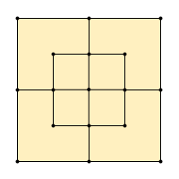

Three Men's Morris
A simple Roman game.
Playing Three Men's Morris
Aim
To get your three counters positioned in a straight line, either horizontally, vertically or diagonally.
How to Play
First Stage (Placing Pieces)
- White plays first.
- Players take turns to place one of their pieces into an empty position on the board.
- The pieces are placed in positions where two or more lines meet.
- If a player gets three in a row then they win and the game ends. Otherwise, once both players have placed three pieces on the board then the game progresses to the second stage.
Second Stage (Moving Pieces)
- Players take turns at moving one of their pieces.
- A player moves their chosen piece along one of the lines marked on the board until it arrives at an adjacent position that is currently unoccupied.
- A piece cannot jump over another piece nor move more than one step in a single move.
- A player wins the game when they manage to arrange their three pieces to form a straight line.
Variations on Three Men's Morris
Alternative Names
The basic game has several different names. The rules are identical in every case.
- Luk Tsut K'i (Chinese for "Six Man Chess")
- Smaller Merels (from Old French)
- Tapatan (Philippines)
- Terni Lapilli (Latin for "Three Small Stones")
- Three Men's Morris
Different Shaped Boards
Topologically Equivalent
Circular
Circular Three Men's Morris / Rota
Octagonal
Fewer Winning Lines Through the Centre Position
Triangular
Different Rules
More Pieces
Four Pieces Per Player
During the movement stage there is only one empty position to move pieces into.
Achi
Five Pieces Per Player
The board gets filled up and there is no movement stage. Gameplay is identical to Noughts and Crosses.
Noughts and Crosses / Tic-Tac-Toe
Restricted Placement
French Rule
In the basic Three Men's Morris, White can play a certain strategy which guarantees Blue will be unable to stop White from winning. If White is banned from placing their first counter in the centre position then Blue has a chance of drawing even against an expert player.
Not Using the Centre Position
Neither player can place a piece in the centre position during the first stage of the game.
Picaria (according to some)
Fixed Placement
White's pieces are always placed on a1, b1 and c1, and Blue's pieces are always placed on a3, b3 and c3. a1‑b1‑c3 is no longer a winning line for White and a3‑b3‑c3 isn't a winning line for Blue.
Shisima, Tant Fant
Restricted Movement
Limited Time in the Centre Position
Players are not allowed to keep their piece in the centre position for more than two consecutive turns.
Circular Three Men's Morris / Rota
Freer Movement
Movement Permitted Along Any Diagonal
This allows, for example, a move from b1 to a2, which isn't a line on the standard board.
9-Point Picaria
Movement Permitted to Any Empty Space
A piece may be picked up and placed anywhere on the board where there is an empty space.
Nine Holes
Different Movement
One variant disallows diagonal moves but grants the pieces the ability to jump over another one.
More Positions, Freer Movement and More Winning Lines
Extra Positions on the Diagonals
This version adds four extra positions, one between b1 and a2, and also between a2 and b3, b3 and c2, and c2 and b1.
13-Point Picaria
Unusual Boards
...Bigger Boards
Concentric Squares
The winning objective is different for the bigger games. Players have to capture their opponent's pieces by making as many lines of three as possible. The best strategies are also different. Some variants allow moving pieces during the placement phase.
Five Men's Morris and Six Men's Morris

Seven Men's Morris
Nine Men's Morris, Shax, and Ten Men's Morris

Eleven Men's Morris, Twelve Men's Morris and Morabaraba

Sesotho Morabaraba

Rectangular Grids
Many different variations
Dara / Dili / Doki (more details), Wali
Four in a Row, Five in a Row and Six in a Row Games
These have more complex strategies.
Connect 4 (and variants), Score 4, Tic-Stac-Toe, Qubic
Go-moku (and variants: Caro, Omok, Renju, Ninuki-renju / Wu, Pente, Keryo-Pente), Pegity
Connect6
More Winning 'Lines'
Sometimes children playing Noughts and Crosses decide that a player who forms a Y shape wins the game. In this version the game never ends in a draw.
Fewer Winning Lines
No Diagonals
The diagonal lines are omitted on some boards.
Only Diagonals
In a non-standard version of Tant Fant only the diagonal lines count as winning lines.
No Outer Lines
In the variants that use differently shaped boards, the equivalents of the top, bottom, left and right lines don't count as winning lines.
Circular Three Men's Morris / Rota, Shisima
Different Winning Shapes
Fangqi (has similarities with go), Harary's generalized tic-tac-toe
Pieces that Change Colour
Ending the Game Another Way
Drawing by Threefold Repetition
If all the pieces are in the same positions and it's the same person's turn to play as a situation that has already occurred twice previously, then the player whose turn it is can claim a draw.
Copied from Chess
Variants in Different Cultures
Games Similar to Three Men's Morris
- Achi: Ghana, Nigeria
- Nine Holes: Britain
- Noughts and Crosses / Tic-Tac-Toe: Britain
- Picaria: Native American
- Rota ("Wheel") / Circular Three Men's Morris: Roman Empire
- Shisima: Kenya
- Tant Fant: India
- Tsoro Yematatu: Zimbabwe
Games with Larger Boards
- Morabaraba / Mlabalaba / Mmela / Muravava / Umlabalaba: South Africa, Botswana and Lesotho
- Shax / Djelga / Jar / Mororova: Horn of Africa, particularly Somalia